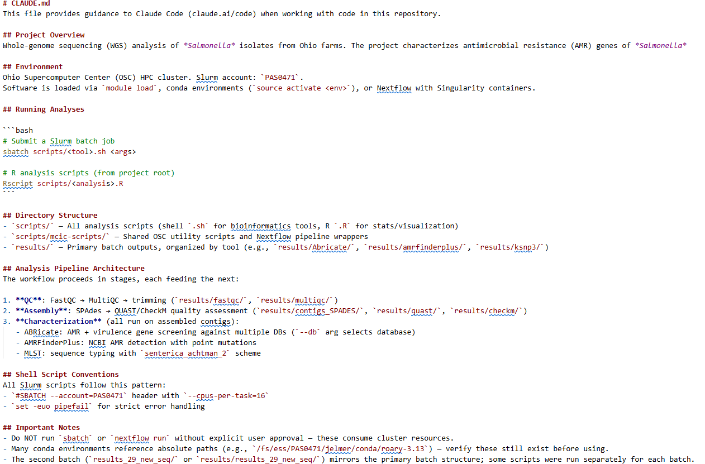
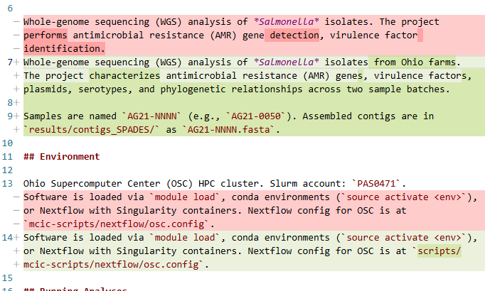
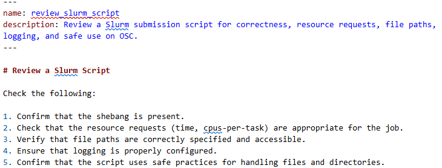
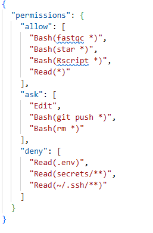
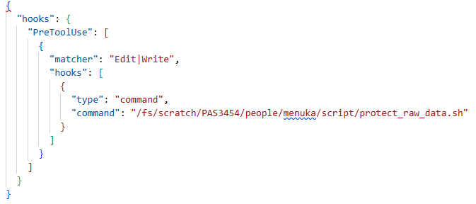
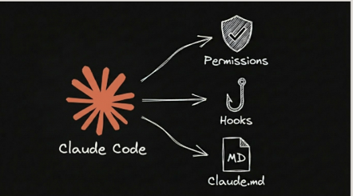

Advanced agentic options and skills
Reusable instructions and specialized agents
![]()
1 Introduction
We have learned that Claude Code is an agentic coding tool that reads your codebase, edits files, runs commands, and integrates with your development tools. However, without proper context, you have to correct the agent and rewrite the code it generates. Also, we learnt to provide context manually to Claude by opening files, selecting code, and using @ references. This works well for individual conversations.
However, you may find yourself repeatedly telling Claude the same things:
- Never modify files in
data/raw/folder - Use the
OSC modulesystem rather than installing software directly if software is available - Submit computationally intensive jobs through
Slurm - Write output files to
results/ - Run a validation procedure after modifying a pipeline
You may also find repeating the same multi-step procedures, such as reviewing a Slurm script, validating a sequencing workflow, or checking whether a pipeline follows project standards. Claude Code provides several ways to make this information reusable. These features work when Claude Code is used through the VS Code extension; you do not need to operate Claude primarily from the terminal.
Examples of when to use each option
| Feature | Use it for | Example |
|---|---|---|
| CLAUDE.md | Information that should apply throughout the project | Project structure, software environment, coding conventions, and safety rules |
| SKILL.md | A reusable procedure or checklist for a specific task | Reviewing a Slurm script or validating a sequencing workflow |
2 CLAUDE.md
CLAUDE.md provides persistent project specific memory to your agent, eliminating the need to re-explain your project at the start of every conversation. CLAUDE.md is a Markdown (.md) file easy to create, edit, and version-control alongside your code. Claude automatically references this file whenever it works in your project, allowing it to make more informed decisions, follow your preferred workflows, and use project-specific conventions. As a result, CLAUDE.md is one of the simplest and most effective ways to customize Claude’s behavior for a research project.
In bioinformatics, a well-written CLAUDE.md helps Claude understand your project, analysis pipeline, directory structure, coding standards, software environment, and preferred workflows. There is no required format for CLAUDE.md. However, this file should be concise, easy to read, and easy to understand for both humans and Claude.
Where should CLAUDE.md be stored?
- The most common location is the root directory of a project repository, where it can serve as a shared reference for everyone working on the project..
rnaseq-project/
├── CLAUDE.md
├── data/
├── scripts/
├── results/
└── README.mdYou can also place a CLAUDE.md:
- In a parent directory for multiple related projects
- In your home directory to apply default instructions across all projects
2.1 Information to include in CLAUDE.md
- Project overview – research objectives and biological questions
- Project description – datasets, organisms, sequencing technology, or experimental design
- Key directories – locations of raw data, processed data, scripts, results, and reference genomes
- Coding and analysis standards – preferred programming languages, naming conventions, documentation style, and reproducibility practices
- Common commands – frequently used Bash, Conda, Docker, Nextflow, Snakemake, or Git commands
- Software environment – package managers, environments, and software versions
- Important notes – project-specific assumptions, quality-control requirements, or common pitfalls
A good CLAUDE.md acts like a team member who already understands your project’s structure and conventions, allowing you to focus on solving biological problems instead of repeatedly providing background information.
2.2 Creating CLAUDE.md file
You can create a CLAUDE.md file in two ways:
- Create it manually by adding a
CLAUDE.mdfile to your project. - Generate it automatically using the
/initcommand in Claude Code.
When you run /init, Claude analyzes your project to generate an initial CLAUDE.md. It examines information such as:
- Project structure
- Package and dependency files
- Existing documentation
- Configuration files
- Source code organization
Example of CLAUDE.md file generated using /init command is provided below:

After running the /init, Claude analyzes your project and generates an initial draft of CLAUDE.md. By default, the file is typically created in the current project directory, where you can review and customize it as needed.
/init again (Click to expand)
Tip: If your project already contains a CLAUDE.md file, running /init again does not overwrite it blindly. Instead, Claude reviews the existing file and suggests improvements or updates based on your current project and ask if you want to edit this file.

What you’re seeing is a Git diff, which Claude Code is showing so you can review the changes it made.
🟢 Green (+) = new text that Claude added
🔴 Red (-) = old text that Claude removed or replaced
The generated file after Running /init a starting point—not a finished product. Take a few minutes to:
- Review the generated content for accuracy.
- Remove instructions that are not relevant to your project.
- Add project-specific workflows, conventions, and best practices that Claude cannot infer automatically.
What Should a CLAUDE.md Include?
A good CLAUDE.md typically covers three key areas:
- Give Claude a map
- Explain your project’s architecture, directory structure, naming conventions, and important files.
- Connect Claude to your tools
- Document common commands for building, testing, linting, running scripts, and using project-specific tools.
- Define standard workflows
- Describe how your team develops code, reviews changes, writes tests, follows coding standards, and handles common tasks.
Treat your CLAUDE.md as living documentation. Start with a simple file generated by /init, then refine it over time as your project evolves. The best CLAUDE.md files capture the conventions and workflows that you find yourself explaining to Claude repeatedly. As your project evolves, update your CLAUDE.md to reflect new workflows, software, directory structures, or analysis conventions. Keeping it current helps Claude continue to provide accurate, project-specific assistance.
Exercise 1: Create CLAUDE.md file
- Run the
/initcommand to generate aCLAUDE.mdfile. - Review the generated file.
- Edit
CLAUDE.mdfile by adding project-specific instructions, for example:
- Write analysis outputs to
results/. - Do not modify
iqbal/fastq
- Add the shell scripting conventions in
CLAUDE.mdfile.
- Always specify software module versions.
- Verify that requested modules exist in OSC before loading them.
- If a module is unavailable, use a Singularity/Apptainer container.
- Always use project account
PAS3454. - Always use strict Bash settings (
set -euo pipefail). - Always create output directories before writing results.
- Verify that expected output files exist and are not empty before reporting success.
- Write SLURM job script to run FastQC on all FASTQ files in
iqbal/fastqand save it inscript/fastqc.sh. - Review the response and verify that it follows the project instructions.
3 Agent skill in Claude Code
3.1 The SKILL.md file
A Claude SKILL.md file is a Markdown file that defines reusable instructions for a specific workflow or task. Skills help Claude perform tasks consistently and reduce the need to repeatedly provide the same prompts, checklists, procedures, or review criteria. An effective SKILL.md file is concise, easy to understand, focused on a single `purpose, and clearly specifies what Claude should do and what it should not do.
A project-specific skill is stored inside the project’s .claude/skills/ directory:
rnaseq-project/
├── .claude/
│ └── skills/
│ └── review-slurm-script/
│ └── SKILL.md
├── CLAUDE.md
├── data/
├── scripts/
├── results/
└── README.md3.2 Components of SKILL.md file
YAML front matter: A structured metadata section at the beginning of the
SKILL.mdfile that defines the skill name and a brief description. It is enclosed between two lines containing three hyphens(---). Claude uses this information to determine when the skill is relevant and should be applied.The skill instructions: The main body of the file that describes the workflow, procedure, guidelines, and rules Claude should follow when using the skill.
Example of SKILL.md file is provided below:

The folder name becomes the command used to invoke the skill. For example, the skill can be run from the Claude Code chat panel using /review-slurm-script. Claude will then ask which Slurm script you want to review. You can provide the script path, such as:scripts/fastqc.sh created in exercise 1. After you select a file, the skill reviews it for issues such as missing Slurm settings, unreasonable resource requests, incorrect paths, missing log files, or unsafe commands. Claude will usually separate confirmed problems from optional improvements and may then ask whether you want it to apply the suggested changes or review another script. Review the proposed changes before approving them. If you choose to apply the fixes, Claude updates the script based on the skill instructions.
Claude does not always need an explicit instruction to use a skill. When a request closely matches a skill’s description, Claude can often identify and apply the appropriate skill automatically. For example, suppose you have a skill called /review-slurm-script that checks Slurm scripts for common errors. If you open a Slurm file and ask: Can you check this Slurm script for mistakes? Claude may recognize that the request matches the skill and use it automatically.
Exercise 2: Test the skill
In this exercise, you will use a skill to investigate a failed Slurm job and identify possible solutions
- Create the following directory structure in your project:
.claude/
└── skills/
└── troubleshoot-slurm-job/
└── SKILL.md- Add the name and the description in the
SKILL.md file in the YAML front matter.
---
name: troubleshoot-slurm-job
description: Review a Slurm job submission script and identify possible errors.
---Copy the Slurm
/fs/scratch/PAS3454/people/menuka/script/trimgalore.shto your script folder.Add the following skill instructions
- Read the submission script.
- Check software modules, file paths, resource requests, and command syntax.
- Determine whether the problem originates from: Slurm configuration, input data, bioinformatics program.
- Report the most likely cause and its solution.
Run the
/troubleshoot-slurm-jobskill from the Claude Code chat panel by providing the relevant files@trimgalore.sh.Review the Claude’s response to check if it identifies the error and the solution to it.
CLAUDE.md gives general project context and facts of projects. Skills are better for specific workflows. Claude does not load the whole Skill every time. It only loads it when needed, so you can keep longer checklists or workflows in a Skill without crowding every chat. Use CLAUDE.md for information Claude should always know. Use Skills for instructions Claude needs only when performing a particular task.
4 Guardrails
AI agents such as Claude Code can read files, modify code, execute shell commands, install software, and automate many aspects of a bioinformatics workflow. These capabilities make them powerful collaborators, but they also introduce risk if they are not properly constrained.
Guardrails are the rules, permissions, and safety mechanisms that control what Claude is allowed to do and how it should behave. Their purpose is to prevent accidental, unsafe, or unwanted actions while still allowing Claude to be productive.
Think of guardrails like the safety rails on a mountain road. They do not stop you from driving—they help prevent you from accidentally going over the edge.
Why Guardrails Matter in Bioinformatics
Imagine a new member joins your laboratory. They may unintentionally:
- Overwrite your raw files
- Delete intermediate analysis results
- Modify reference genomes or annotation databases
- Execute commands in the wrong directory
- Ignore the laboratory’s coding standards
- Commit API keys or passwords to GitHub
Guardrails provide an additional layer of protection that helps catch these mistakes before they happen.
4.1 Built-in Security Guardrails
Claude Code includes several security features:
Permission-based architecture : By default, Claude Code is read-only. Whenever Claude wants to edit files, run tests, execute commands, it ask for your permission.
Limited write access : Claude can only write inside the directory where it was started (and its subdirectories). If Claude starts inside
project/, it cannot accidentally modify files outside that project without additional permission.Prompt injection protection : Claude includes safeguards designed to identify potentially untrusted instructions embedded in files, web pages, or other content it reads. When an instruction could result in a sensitive or potentially harmful action, Claude may request additional confirmation before proceeding. These protections improve safety but are not foolproof, so users should always review proposed actions before approving them.
4.2 User-configurable Guardrails
- Permission: Permissions control what Claude is allowed to read, modify, and execute. These rules are defined in the
settings.jsonfile and help protect sensitive information while reducing the risk of accidental or harmful actions. For example, you can prevent Claude from reading environment files, secrets directories, or SSH keys, while allowing it to run approved bioinformatics tools.
Example: The permissions defined in /fs/scratch/PAS3454/people/menuka/.claude/settings.json allow Claude to read project files and run approved bioinformatics tools such as fastqc, STAR, and Rscript. Claude must ask for approval before editing files, deleting files, or pushing changes to GitHub. Access to sensitive information including .env files, secrets/ directories, and SSH keys—is completely blocked.

- Hooks : Hooks are small programs or scripts that run automatically before or after Claude uses a tool. Unlike instructions in CLAUDE.md, hooks are always executed whenever the specified event occurs. This makes them ideal for enforcing mandatory safety rules. Because hooks execute automatically, they act as hard guardrails rather than recommendations.
The following hook events are useful for enforcing project standards, protecting data, and validating workflows in bioinformatics projects.
| Event | When it runs | Example use case |
|---|---|---|
| PreToolUse | Before Claude executes a command or tool | Block dangerous commands such as rm -rf |
| PostToolUse | After a command or tool completes successfully | Validate a Slurm script after Claude edits it |
| FileChanged | When a monitored file changes | Re-run workflow validation after a pipeline is modified |
| SessionStart | When a Claude session begins | Load environment information or display project guidelines |

This hook protects raw FASTQ data from accidental modification. Before Claude edits or writes a file, it automatically runs a script that blocks changes to files stored in protected directories.
- Project Guardrails (
CLAUDE.md) : Where hooks and permissions define what Claude can do, CLAUDE.md defines how Claude should work. A goodCLAUDE.mdestablishes project conventions such as:
- Preferred programming languages
- Coding style
- Software versions
- Directory structure
- Workflow order
These are not security restrictions but behavioral instructions that help Claude work consistently across the project.

Guardrails complement but not replace human review. Always review Claude’s proposed code, analyses, and file changes, especially when working with sensitive datasets.